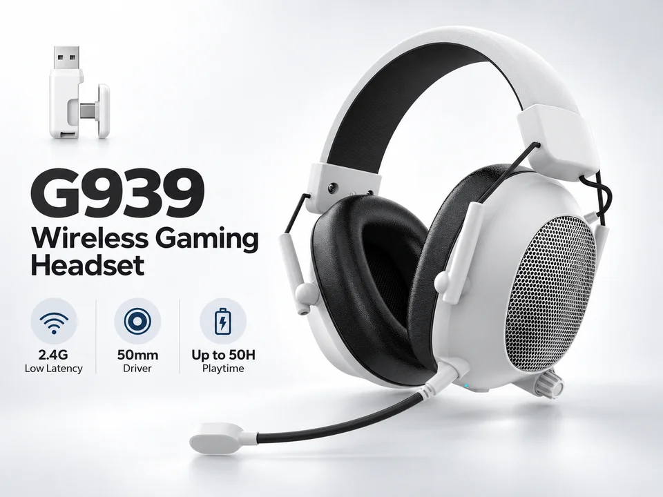
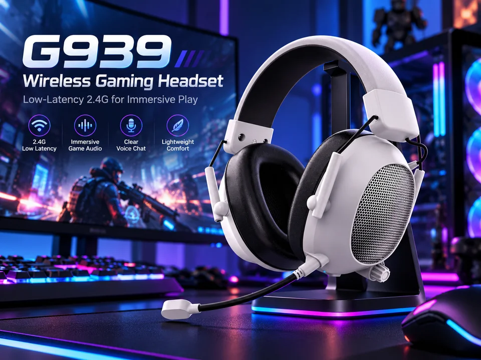
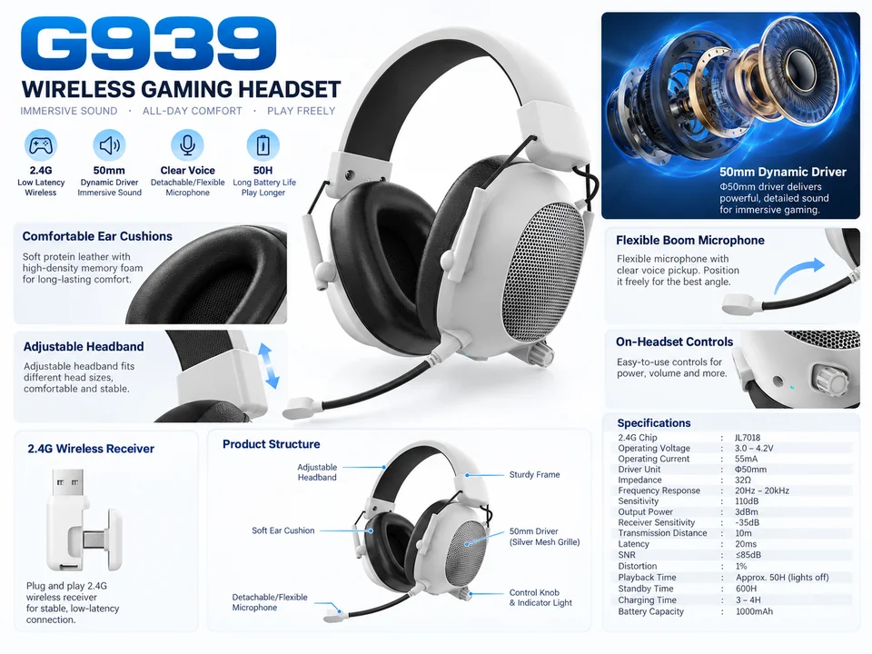
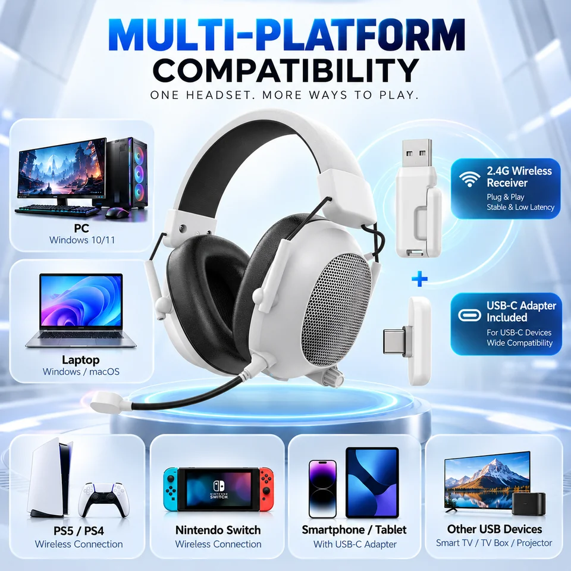
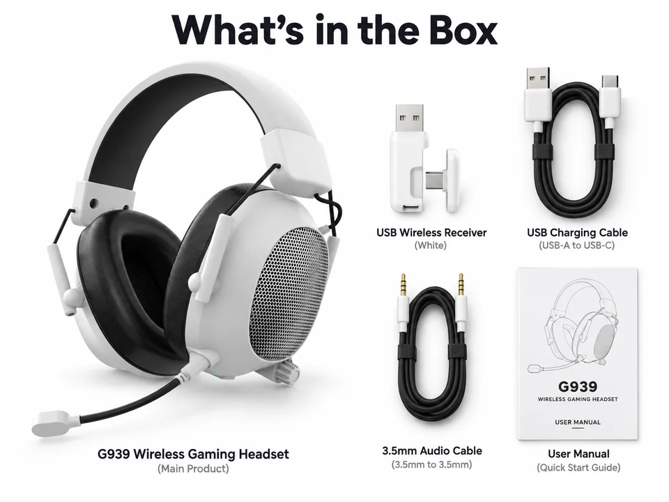

Does this G939 use 50mm drivers?
Yes. The latest supplied G939 wireless graphics specify a 50mm dynamic driver. This replaces the older 40mm entry. The wired-only G939 remains a separate product page.

G939 / 50mm drivers / OEM samples
Building a gaming range that needs a white option? G939 pairs a white finish and silver mesh earcups with 50mm drivers and a 2.4GHz USB receiver. The supplied specification lists up to 50 hours of playback with lights off. Take a look at the fit, receiver and accessory views, then tell us which devices your customers use.

Looking for the other connection version? View G939 wired. Images, specifications and accessory sets are kept separate.
Product images
Six supplied graphics show the white finish, gaming setup, fit, controls, connection options and pictured accessory set. Lifestyle scenes and internal-driver artwork are illustrations, not customer photos or test reports.




Listed model details
The latest supplied G939 graphics list a 50mm driver, replacing the older 40mm entry. Performance figures below are supplied specifications, not new test results.
Playback is listed at approximately 50 hours with lights off. Volume, wireless conditions and usage affect actual runtime; this is not a new battery test.
The 20ms latency figure is a supplied specification, not a zero-delay claim or an end-to-end measurement on every device.
Device connections
The diagram shows target-device examples, not a completed compatibility test. Playback and microphone input need separate checks.
Accessory set
The supplied box graphic shows the headset, USB wireless receiver with a USB-C adapter, USB-A to USB-C charging cable, 3.5mm audio cable and user manual. Treat it as the pictured set until the final packing list is agreed.
Before choosing a sample
Product FAQ
Yes. The latest supplied G939 wireless graphics specify a 50mm dynamic driver. This replaces the older 40mm entry. The wired-only G939 remains a separate product page.
The supplied connection diagram shows a 2.4GHz USB receiver and USB-C adapter, not Bluetooth pairing. Share the exact PC, console, phone or tablet so receiver compatibility and microphone input can be checked.
The supplied specification lists approximately 50 hours with lights off and a 1000mAh battery. Actual runtime depends on volume, wireless conditions and use. This is not a new battery test.
No. The graphic shows the headset, receiver with USB-C adapter, charging cable, 3.5mm audio cable and manual. Confirm the included set for your selected sample and order. Pictured parts are not automatically included.
Use the G939-specific sample inquiry and tell us your target devices, market and preferred packaging. Confirm the base sample, receiver, microphone and accessory list before approving logo or packaging artwork.
Send your target device, market and model question. A finished RFQ is not needed to start.